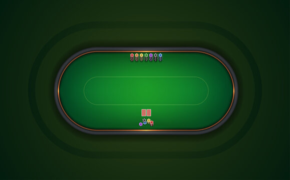

This card game is a simulation used to demonstrate multithreading with multiple players to determine a winner. The goal of the game is get as many points as possible before the dealer does not have any more cards. The dealer will start generating random numbers between 1-40 and put them into a FIFO queue. The dealer will generate a total of T numbers (which is pre-defined before the start of the game). Every time a number is generated, the dealer will look at the queue, if there is not more than N numbers in the queue, it will insert the number at the end of the queue. Otherwise it will wait until there are no more than N numbers. Once there are number(s) in the queue, the players will try to grab the number at the front of the queue. When a player (call him/her player k) grabs hold of that number, he/she will rest for a short period of time, and then determine whether he/she will score and whether he/she will need to put the number back to the (end of the) queue.
